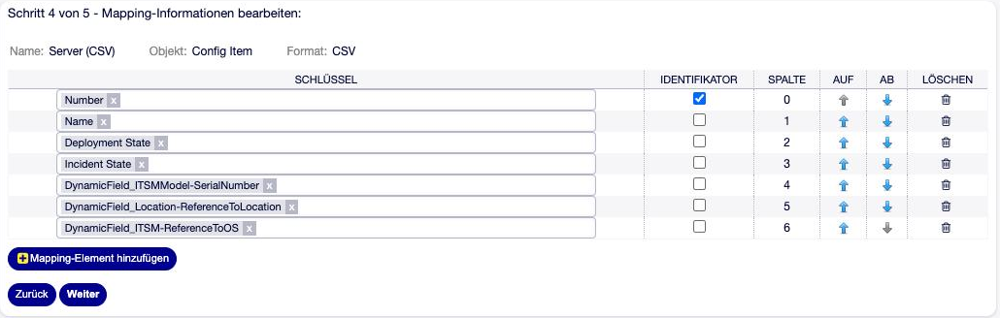

Import und Export von Config Items¶
Config Items lassen sich als CSV- oder JSON-Datei exportieren und importieren — für die Erstbefüllung aus einer Inventarliste, für Massenänderungen oder für den Abgleich mit anderen Systemen. Klassen und Definitionen selbst werden nicht hier, sondern über den Klassenexport übertragen (siehe Klassen exportieren und importieren).
Das Import/Export-Framework ist in OTOBO 11.0 Teil des Kerns
(Admin → Import/Export, Gruppe admin). Die CMDB registriert dort das Objekt
ITSMConfigItem
(ImportExport::ObjectBackendRegistration###ITSMConfigItem).
OTOBO 11.1
Das Objekt ITSMConfigItem arbeitet in 11.1 unverändert.
Vorlage anlegen¶
Import und Export laufen immer über eine Vorlage. Admin → Import/Export → Vorlage hinzufügen, dann in fünf Schritten:
Objekt und Format: Objekt ITSMConfigItem, Format CSV oder JSON, Name der Vorlage.
Objekteinstellungen: Klasse und weitere Optionen (siehe unten).
Formateinstellungen: Trennzeichen, Kopfzeile usw.
Zuordnung: welche Spalte welches Attribut enthält — und welche Spalten Config Items eindeutig erkennen.
Suche (nur für den Export): welche Config Items exportiert werden.

Abb. 18 Zuordnung der Spalten in einer Import/Export-Vorlage¶
Eine Vorlage gilt für genau eine Klasse.
Objekteinstellungen¶
Option |
Bedeutung |
Standard |
|---|---|---|
Klasse |
Klasse, deren Config Items importiert oder exportiert werden (Pflicht). |
– |
Maximale Anzahl eines Elements |
Wie viele Einzelwerte eines mehrwertigen Feldes als eigene Spalten zur Zuordnung angeboten werden. |
3 |
Maximale Anzahl eines Set-Elements |
Wie viele Einträge eines mehrwertigen Set-Feldes angeboten werden. Bei 0 ist das Set nur als Ganzes zuordenbar. |
0 |
Maximale Anzahl innerhalb eines Set-Elements |
Wie viele Einzelwerte eines mehrwertigen Feldes innerhalb eines Set-Eintrags angeboten werden. |
0 |
Leere Felder behalten die aktuellen Werte |
Beim Import: Eine leere Zelle lässt den vorhandenen Wert stehen, statt ihn zu löschen. |
aus |
Anhänge importieren/exportieren |
Anhänge werden als letzte Spalten jeder Zeile mitgeführt. |
aus |
Formateinstellungen¶
CSV — Spaltentrenner (Tabulator, Semikolon, Doppelpunkt, Punkt, Komma), Zeichensatz (fest UTF-8), Kopfzeile ja/nein.
JSON — optional formatierte Ausgabe. JSON kann verschachtelte Werte (mehrwertige Felder, Sets, Referenzen) direkt abbilden; bei CSV werden solche Werte als JSON-Text in die Zelle geschrieben.
Bemerkung
Das Format JSON ist ab Werk ausgeschaltet
(ImportExport::FormatBackendRegistration###JSON).
Zuordnung¶
Verfügbare Attribute:
Schlüssel |
Inhalt |
|---|---|
|
Config-Item-Nummer (nur Export und Identifikation, siehe unten) |
|
Name |
|
Verwendungsstatus (Name) |
|
Vorfallstatus (Name) |
|
Versionsbezeichnung |
|
Beschreibung — nur, wenn die Klassendefinition einen Abschnitt vom Typ
|
|
Wert eines dynamischen Feldes der Klasse |
Für mehrwertige Felder und Sets gibt es zusätzlich Schlüssel mit Positionsangabe (ab 1 gezählt), abhängig von den Maximalwerten der Objekteinstellungen:
DynamicField_Contact-Distributor ganzes Feld (JSON-Liste)
DynamicField_Contact-Distributor::1 erster Wert
DynamicField_Contact-Distributor::2 zweiter Wert
DynamicField_ITSMStorage-Storage ganzes Set (JSON)
DynamicField_ITSMStorage-Storage::1 erster Set-Eintrag
DynamicField_ITSMStorage-Storage::1::ITSMStorage-Type Feld im ersten Eintrag
DynamicField_ITSMStorage-Storage::1::ITSMStorage-Type::2 zweiter Wert davon
Jede Zeile der Zuordnung hat das Kästchen Identifikator.
Export¶
Im Schritt Suche wird festgelegt, welche Config Items der Klasse exportiert werden: Nummer, Name, Verwendungs- und Vorfallstatus, Höchstzahl sowie Filter auf dynamische Felder der Typen Text, Textarea und General Catalog (exakter Vergleich).
Exportiert werden nur Config Items, die der ausführende Agent sehen darf.
Die Werte stehen im Export so, wie OTOBO sie speichert:
Verwendungs- und Vorfallstatus als Namen,
dynamische Felder roh — bei Auswahl- und Referenzfeldern also die gespeicherten Schlüssel bzw. IDs, nicht die Anzeigenamen,
Bilder aus der Beschreibung und Anhänge base64-kodiert.
Import¶
Neu anlegen oder aktualisieren?¶
Für jede Zeile sucht OTOBO innerhalb der Vorlagenklasse ein Config Item, bei dem alle Identifikator-Spalten exakt übereinstimmen:
ein Treffer → das Config Item wird aktualisiert,
kein Treffer → ein neues Config Item wird angelegt,
mehrere Treffer → die Zeile schlägt fehl (Identifier fields NOT unique!),
leere Identifikator-Zelle → die Zeile schlägt fehl.
Identifikatoren können Nummer, Name, die Status und dynamische Felder sein — Referenzfelder werden dabei über ihre Suche aufgelöst. Mehrwertige Felder und Set-Einträge eignen sich nicht als Identifikator.
Tipp
Bei Erstimporten aus Fremdsystemen ist ein eigenes Feld für die externe Kennung (etwa Inventarnummer) als Identifikator robuster als der Name.
Regeln beim Import¶
Die Nummer wird nie geschrieben. Neue Config Items bekommen immer eine neue Nummer vom Nummernmodul der Klasse;
Numbertaugt nur als Identifikator.Pflichtfelder der Klassendefinition (
Mandatory) müssen in der Zuordnung vorkommen, sonst schlägt die Zeile fehl.Name,DescriptionundVersionStringdürfen nicht leer sein — außer Leere Felder behalten die aktuellen Werte ist aktiv.Status werden über ihren Namen angegeben.
Mehrwertige Felder und Sets ohne Positionsangabe erwarten JSON.
Ist die Namensprüfung aktiv (
UniqueCIName::EnableUniquenessCheck), schlägt eine Zeile mit doppeltem Namen fehl (DuplicateName).
Leere Zellen¶
Ohne die Option Leere Felder behalten die aktuellen Werte löscht eine leere
Zelle den vorhandenen Wert. Mit der Option werden leere Zellen übersprungen.
Als leer gilt nur eine wirklich leere Zelle — Leerzeichen und 0 sind Werte.
Warnung
Ohne Leere Felder behalten die aktuellen Werte entfernt ein Update alle Anhänge des Config Items — auch dann, wenn Anhänge importieren/exportieren gar nicht aktiv ist. Für reine Feldaktualisierungen die Option daher einschalten.
Referenzfelder¶
Wie der Wert eines Referenzfeldes gelesen wird, legt die Feldeinstellung
Externe-Quelle-Schlüssel (ImportSearchAttribute) fest (siehe
Referenzfelder auf Config Items):
leer (so in allen mitgelieferten Klassen) — der Wert wird als interne ID des referenzierten Objekts verstanden. Das passt zu einem Export aus demselben System, nicht aber zu einer Liste mit Namen.
gesetzt (z. B.
NameoderNumber) — OTOBO sucht das Objekt über dieses Attribut. Genau ein Treffer ergibt die ID; kein oder mehrere Treffer lassen das Feld leer, ohne dass die Zeile als fehlerhaft gilt.
Warnung
Bei gesetztem Externe-Quelle-Schlüssel wird die Klassenbeschränkung des
Referenzfeldes bei der Suche nicht angewendet. Kommt derselbe Name in mehreren
Klassen vor, ist das Ergebnis mehrdeutig und das Feld bleibt leer. Für
Importe daher möglichst die eindeutige Number verwenden.
Versionen¶
Ein Update verhält sich wie Speichern in der Oberfläche: Eine neue Version entsteht nur, wenn ein geänderter Wert zu den Versionsauslösern der Klasse gehört (siehe Wann entsteht eine neue Version eines Config Items?). Sonst wird die aktuelle Version überschrieben.
Ergebnis¶
Nach dem Import meldet OTOBO je Zeile Created, Changed oder einen Fehler, zusammengefasst als Zähler.
Konsole¶
Für große Datenmengen oder zeitgesteuerte Abläufe laufen Vorlagen auch auf der Konsole. Die Vorlagennummer steht in der Vorlagenübersicht.
# Import aus einer Datei
bin/otobo.Console.pl Admin::ImportExport::Import --template-number 3 /tmp/server.csv
# Import aller Dateien <Präfix>NNNNNN.csv aus einem Verzeichnis
bin/otobo.Console.pl Admin::ImportExport::Import --template-number 3 --prefix server /tmp/import/
# Export in eine Datei
bin/otobo.Console.pl Admin::ImportExport::Export --template-number 4 /tmp/server-export.csv
Die Konsolenbefehle laufen mit Administratorrechten ohne Einschränkung durch die Berechtigungsgruppe der Klasse.
Das CMDB-Paket bringt zusätzlich ältere Varianten
Admin::ITSM::ImportExport::Import und Admin::ITSM::ImportExport::Export
mit (nur --template-number und Datei, keine Verzeichnisse). Zu verwenden sind
die Befehle des Kerns.